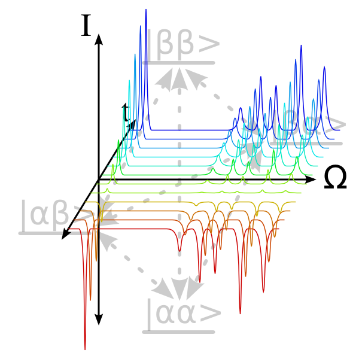
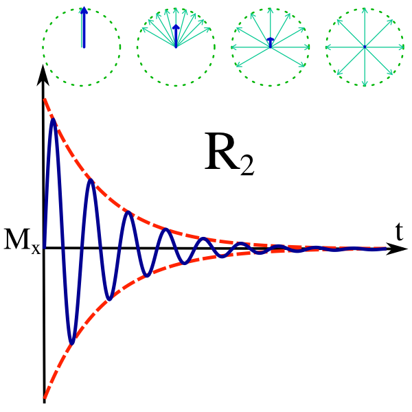

Next:
Introduction to relaxation curve-fitting
Up:
The specific analyses
Previous:
The specific analyses
Contents
Index
The
R
1
and
R
2
relaxation rates - relaxation curve-fitting
 
Subsections
Introduction to relaxation curve-fitting
The exponential curve models
From spectra to peak intensities for the relaxation rates
Temperature control and calibration
Spectral processing
Measuring peak intensities
Relaxation curve-fitting in the prompt/script UI mode
Relax-fit script mode - the sample script
Relax-fit script mode - initialisation of the data pipe
Relax-fit script mode - setting up the spin systems
Relax-fit script mode - loading the data
Relax-fit script mode - the rest of the setup
Relax-fit script mode - optimisation of exponential curves
Relax-fit script mode - error analysis
Relax-fit script mode - finishing off
The relaxation curve-fitting auto-analysis in the GUI
Relax-fit GUI mode - initialisation of the data pipe
Relax-fit GUI mode - general setup
Relax-fit GUI mode - setting up the spin systems
Relax-fit GUI mode - unresolved spins
Relax-fit GUI mode - loading the data
Relax-fit GUI mode - optimisation and error analysis
Final checks of the curve-fitting
The
relax
user manual
(
PDF
), created 2015-09-30.